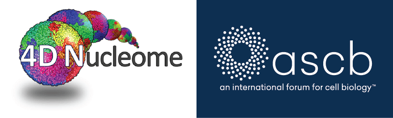

2019 4DN-ASCB Satellite Meeting:
bridging the 4D Genome with Cell Biology
Capital Hilton, Washington, D.C.
December 5-6, 2019
Planning Committee Chairs
Jennifer Phillips-Cremins
University of Pennsylvania
University of Pennsylvania
Bing Ren
University of California San Diego
University of California San Diego
Sheng Zhong
University of California San Diego
University of California San Diego
Planning Committee Members
Burak Alver
Massachusetts Institute of Technology
Massachusetts Institute of Technology
David Balasundaram
National Institutes of Health
National Institutes of Health
Iddil Bekirov
National Institutes of Health
National Institutes of Health
Olivier Blondel
National Institutes of Health
National Institutes of Health
Riccardo Calandrelli
University of California San Diego
University of California San Diego
Zhen Chen
City of Hope
City of Hope
Charles Danko
The Baker Institute for Animal Health
The Baker Institute for Animal Health
Zhijun Duan
University of Washington
University of Washington
Ian Fingerman
National Institutes of Health
National Institutes of Health
David Grunwald
University of Massachusetts Medical School
University of Massachusetts Medical School
Sean Hanlon
National Institutes of Health
National Institutes of Health

Felicia Juarez
Princeton University
Princeton University
Judith Mietz
National Institutes of Health
National Institutes of Health

Clodagh O'Shea
Salk Institute
Salk Institute
Thoru Pederson
University of Massachusetts Medical School
University of Massachusetts Medical School
Dariusz Plewczynski
University of Warsaw
University of Warsaw
Ana Pombo
Max-Delbrück-Center for Molecular Medicine
Max-Delbrück-Center for Molecular Medicine

Ananda Roy
National Institutes of Health
National Institutes of Health
Yijun Ruan
The Jackson Laboratory
The Jackson Laboratory
Shankar Subramaniam
University of California San Diego
University of California San Diego
Anastassiia Vertii
University of Massachusetts
University of Massachusetts
Ting Wang
Washington University School
Washington University School
Yingxiao Wang
University of California San Diego
University of California San Diego
Feng Yue
Pennsylvania State University
Pennsylvania State University